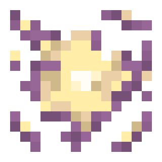

The Antigravity Shard can by dropped by a Norhval.
It can be used like an Artifact of Levitation,
but doesn't last very long and gives the Nausea effect.
It disappears after usage!
v0.2: Added the Antigravity Shard, as a crafting ingredient for the Artifact of Levitation